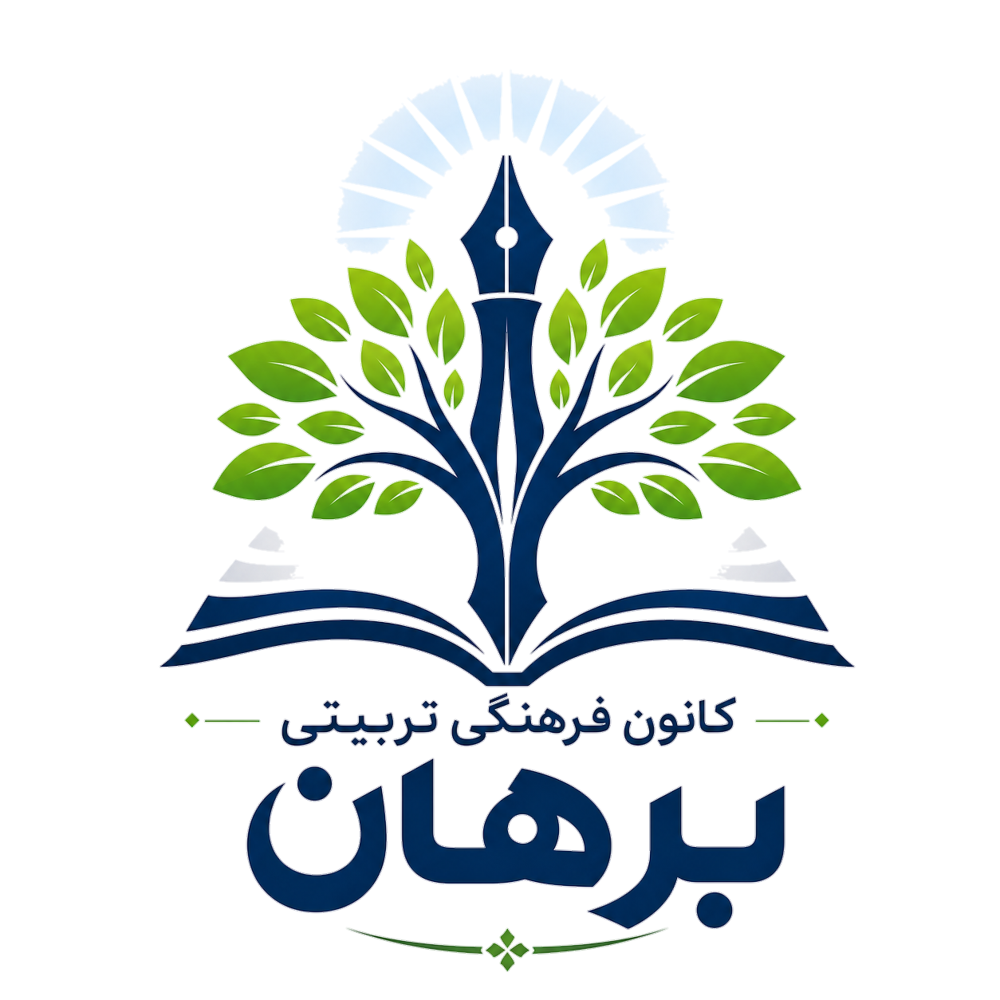
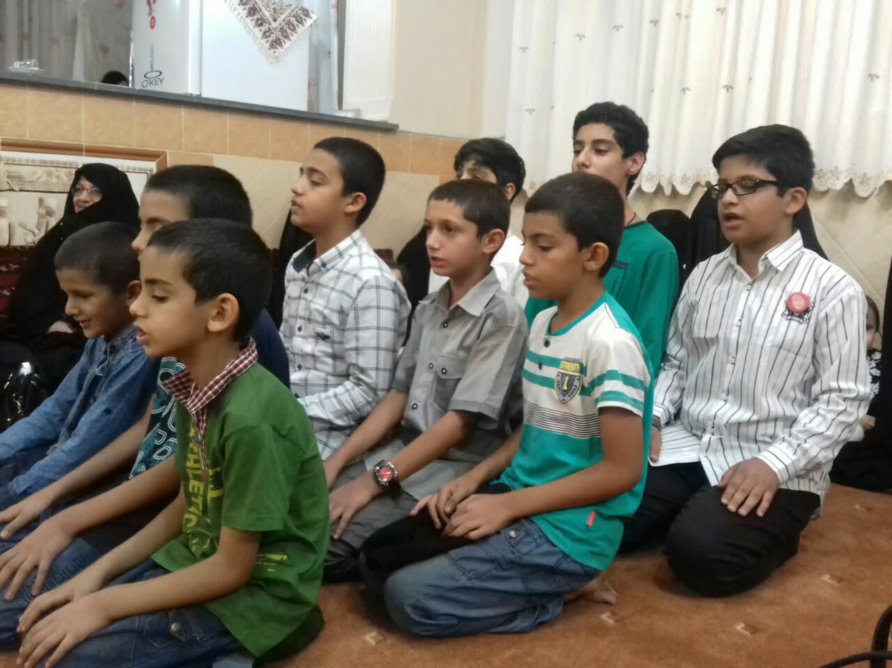
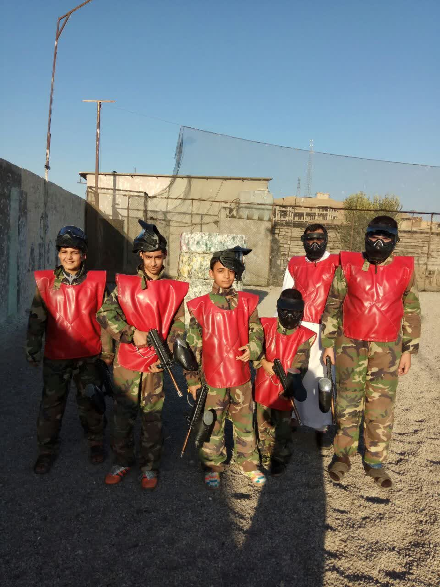
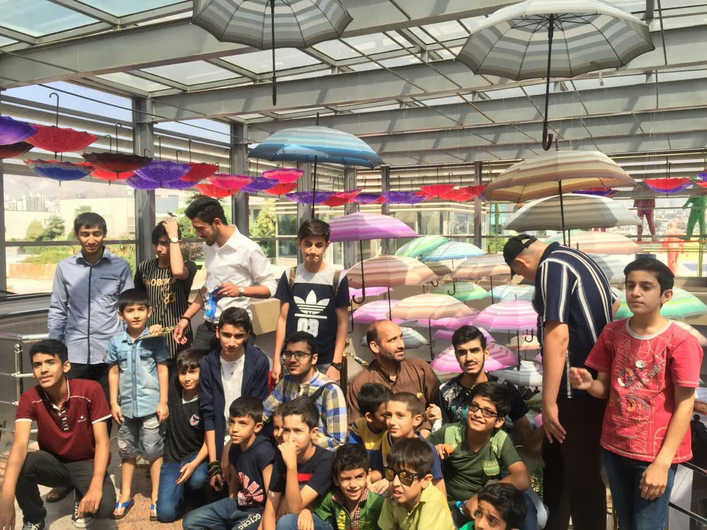

کانون فرهنگی تربیتی برهان با هدف رشد علمی، فرهنگی و تربیتی نوجوانان فعالیت میکند. این مجموعه با بیش از یک دهه برگزاری دورههای آموزشی، برنامههای فرهنگی، مسابقات، اردوها و فعالیتهای اجتماعی بستری مناسب برای شکوفایی استعدادهای نسل آینده فراهم میآورد.
برگزاری اردوی فرهنگی ویژه اعضای کانون.
ثبت نام کلاسهای تابستانی آغاز شد.
مسابقات فرهنگی و هنری برگزار میشود.

تصویری از یکی از تواشیح بچه ها.

تصاویر مسابقات تیمی.

گزارش تصویری اردوی فرهنگی اعضای کانون.
ویدئو یکی از بچه ها از شهربازی.
1404 گزارش ویدئویی مراسم محرم.
چگونه با تست همدیگر را بشناسیم.
نگو چیکار بکنم, بگو چیکار نکنم.
مبحث سوم_چند ضلع موفقیت.
بخش اول
بخش دوم
بخش سوم
🔺کارِ مردان روشنی و گرمی است
در این شعرِ مولانا، "روشنی" میتواند به دانشاندوزی و روشنبینی نظر داشته باشد و "گرمی" به حال خوب و خدمت به مردُم و سلوک معنوی. به عبارت روشنتر به آموزش و پرورش.
امروز در کانون فرهنگی تربیتی آیة الله برهان ره نشستی داشتیم.
موضوع نشست "مسیر ناهموار پیشرفت" بود.
مهمانان این نشست آقایان دکتر حسین بدری و مهندس اصغر محمودی بودند.
هر دو بزرگوار از راهِ طیشدهٔ خود گفتند و نکتهها سُفتند.
نکتهٔ مشترک هر دو، محرومیت نسبی مالی در آغاز راه بود. که البته در سایهٔ دانشدوستی و معنویت و تربیت خانوادگی این محرومیت، قابل تحمل میشود.
در ادامه به جنبه معنوی خانه و خانواده پرداخته شد و اینکه این سختکوشیها و موفقیتهای علمی و شغلی مانع از رشد و تربیت دینی خانه و خانواده نشد. هر دو بزرگوار در تشکیل و مشارکت در مراسم دینی موفقاند و خود و فرزندانشان در مسجد و حسینیه و هیئت حضور خوبی دارند. کتاب میخوانند و دغدغه فرهنگ دارند.
در این میان آقای امید حیدرلو یک پرسشِ بهجا و چالشی از دکتر بدری مطرح کرد: با وجود موقعیت شغلی مناسب چرا کشور آمریکا را برای ادامه زندگی برگزیدید.
پاسخ دکتر حسین این بود: به دو دلیل
۱. اشتیاق به دیدن فضاهای علمی بهروزتر
۲. امکان درآمد بیشتر برای رسیدگی به کارهای خیر و عام المنفعه.
و انصافا خاندان معزز بدری در این جنبه سرآمدند و در رسیدگی به نیازهای مستمندان و مراکز فرهنگی و مددجویی پیشتازند.
در پایان از دو بزرگوار توصیه و نصیحت خواستیم. مهندس محمودی توصیه کرد که نوجوانان و جوانان به شعور و آگاهی بپردازند و از شور ناآگاهانه بپرهیزند. رصد لحظهای کانالها و سایتهای خبری و پرسهزدن در اینستاگرام نمونهای از شور بیجا و زیانبار است.
دکتر بدری هم نوجوانان و جوانان را از نشست و برخاست با افراد منفیباف و نیز محیط سمّی پرهیز داد و گفت سیاهنماییِ دوستان و خانواده از وضعیت کشور، آفتی است که میتواند جوانان را نسبت به آینده ناامید کند.
جلسه بسیار سودمند و پربار بود.
بنده لذت بردم و لازم میدانم از دو دانشمند فرهیخته آقایان محمدعلی محمودی و محمدحسن بحرینی که زمینه و امکان این نشست را فراهم کردند تشکر کنم.
از حضور و استقبال گرم سروران خانمها و اقایان هم کمال قدردانی را دارم.
📞 09357202077
📧 info@borhan.ir
📍 قم, خیابان انقلاب, کوچه 46, پلاک 5, کانون فرهنگی تربیتی برهان